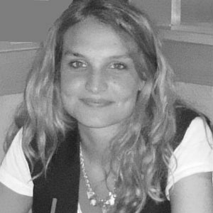
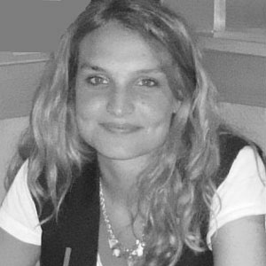

Sponsors & Partenaires

Avec l´essor des objets connectés (balances, montres, tensiomètres,...) et du «quantified self», les rapports que les personnes entretiennent avec leur santé, qu´elles souffrent ou non d´une maladie, sont amenés à changer. Cependant, la généralisation de la e-santé pose des questions délicates telles que la confidentialité des données personnelles, et elle entraîne de profonds changements dans le milieu médicale avec un basculement des services de santé vers le numérique et une implication accrue du patient dans sa propre santé. Ces bouleversements induisent de nouveaux questionnements, que ce soit d´un point de vue éthique, relationnel ou encore pratique : Quelle sécurisation des données ? Quelles utilisations ? Que va changer la connectivité dans la relation patient/médecin ? Finalement, quel sera l´avenir de la santé dans un monde connecté?
Les objectifs de ce séminaire sont de présenter un état des lieux de la e-santé en France, de l´utilisation qui en est faite et des perspectives à venir pour une santé connectée. Trois tables rondes seront réalisées pour répondre à ces objectifs.
08h:30 - 09h:00 : Acceuil des participants - Café.
09h:00 - 09h:15 : Mot d´introduction
Intervenant: Organisateurs du SID.
09h:15 - 10h:15 : Conférence plénière « La e-santé en France : État des lieux. »
Intervenant: Ligui Flora, Chercheur associé en Sciences Humaines et sociales, CERAPS.
10h:15 - 10h:30 : Pause Café.
10h:30 - 12h:00 : Table ronde 1: Big data et confidentialité des données.
Intervenants:
12h:00 - 13h:30 : Pause déjeuner.
13h:30 - 15h:00 : Table ronde 2: Rapport santé connectée et pratique médicale.
Modérateur: Audrey Petit, Ingénieure de recherche en sociologie, EHESP Paris.
Intervenants:
15h:00 - 15h:15: Pause Café.
15h:15 - 16h:45: Table ronde 3: Avenir de la santé dans un monde connecté.
Modérateur: Joëlle Kivits, Maître de conférences en sociologie de la santé , Ecole de Santé Publique, Nancy.
Intervenants:
16h:45 - 17h:00 : Clôture
Université Paris Descartes, 15 Rue de l´École de Médecine, 75006 Paris. Site des Cordeliers Aile B, Étage 2, Amphi Gustave Roussy.
Métro: 4 - Odéon


 



Vous pouvez nous contacter à l´adresse mail: esconnect2016@gmail.com